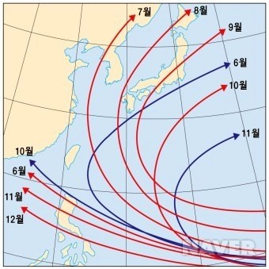

태 풍
태풍의 의미
북태평양 서부에서 발생하여 아시아 대륙 동부로 불어오는 열대성 저기압, 또는, 그 열대성 저기압이 동반하는 폭풍우. 지름이 수백에서 1,000km 정도 되는 소용돌이로, 바람은 그 중심을 향해 반시계 방향으로 돌며 움직인다. 풍속은 초속 17m 이상으로 발달하고, 중심에서 수십 km 떨어진 곳이 가장 크며, 중심(태풍의 눈)은 비교적 정온(靜穩)한 현상을 나타낸다. 보통 7∼9월경에 불어와 풍수해를 종종 일으킨다.
태풍 발생하는 원인
태양으로부터 오는 태양열은 지구의 날씨를 변화시키는 주된 원인이다. 지구는 자전하면서 태양의 주위를 돌기 때문에 낮과 밤, 계절의 변화가 생기며, 이로 인해 지구가 태양으로부터 받는 열량의 차이가 발생한다. 또한 대륙과 바다, 적도와 극지방과 같이 지역 조건에 따른 열적 불균형이 일어난다. 이러한 불균형을 해소하기 위하여 태풍이 발생하고, 비나 눈이 내리고, 바람이 불고, 기온이 오르내리는 등 날씨의 변화가 생기게 된다. 적도 부근이 극지방보다 태양열을 더 많이 받기 때문에 생기는 열적 불균형을 없애기 위해, 저위도 지방의 따뜻한 공기가 바다로부터 수증기를 공급받으면서 강한 바람과 많은 비를 동반하며 고위도로 이동하는 기상 현상을 태풍이라 한다.

태풍의 구조
지름이 5~20km인 태풍의 눈에서는 바람이 약하고 구름이 거의 없다. 눈을 벗어나면 바람이 외곽에서 중심을 향해 반시계 방향으로 강하게 분다. 즉, 태풍 자체가 시계 반대 방향으로 태풍 중심을 향해 불고 있는 강한 비바람 덩어리이다. 이것이 태풍의 진행 방향 오른쪽이 태풍의 영향을 더욱 강하게 받는 원인이다.
태풍의 진행 방향 오른쪽에서는 앞쪽에서 맞부딪치는 바람과 태풍의 시계 반대 방향으로 부는 바람이 서로 정면으로 맞부딪쳐 강한 소용돌이를 일으킨다. 기상 전문가들은 이러한 태풍의 특성에 따라 태풍 진행 방향의 오른쪽을 위험반원, 태풍의 왼쪽 방향을 가항반원이라 부른다.
한편, 태풍이 접근해 오면 기압은 하강하고, 점차 바람이 불기 시작한다. 구름은 처음에 높은 구름인 권운, 권층운, 다음은 중층운인 고층운, 고적운, 그리고 거대한 적운 순으로 나타낸다.

태풍에 대한 대책

- 태풍과 집중호우에 관한 정보를 주의 깊게 듣는다. 휴대용 라디오를 준비한다.
- 함부로 외출하지 않는다. 외출한 경우에는 신속히 귀가한다.
- 집주변을 살피고 바람에 날릴 수 있는 물건은 없는지 확인하여 집안으로 옮기거나 단단히 고정한다.
- 현관과 창문 틈에 비닐 테이프를 붙인다.
- 정전에 대비하여 회중전등과 양초를 준비한다. 예비전지도 잊지 않는다.
- 언제든지 피난할 수 있도록 가정용 비상용품을 미리 준비해 둔다.
- 침수에 대비하여 가재도구를 가능한 높은 장소로 옮긴다.
- 병자, 유아, 노약자 등은 안전한 장소로 이동한다.
- 가스,전원 등은 재해발생 우려시 완전히 차단한다.
- 가족회의를 통해 다시한번 피난장소와 피난 경로를 확인해 둔다.
피난시 주의사항

- 태풍과 호우 발생시를 대비하여 피난하는 장소는 강풍을 견딜 수 있는곳과 침수의 위험이 없는 높은지역을 미리 선정한다.
- 홍수 등으로 도로소통에 어려운 장소가 있을수 있으므로 사전 에 몇 개의 우회도로를 선정하여 적절한 이동이 될 수 있도록 준비한다.
- 집주변을 살피고 바람에 날릴 수 있는 물건은 없는지 확인하여 집안으로 옮기거나 단단히 고정한다.
- 강풍 등으로 부착물 등 위험한 물건이 날아올 위험이 있으니 피난시에는 반드시 머리보호 용구와 수건을 지참한다.
- 물이 흐르는 곳을 통과할 경우 돌이나 맨홀 등에 유의하고, 발밑을 살피며 걸어간다.